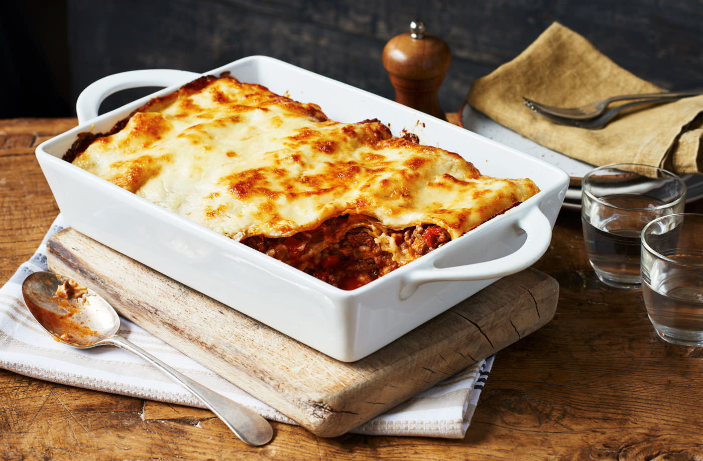

Lasagne Recipe

Description
This delicious lasagne recipe can be cooked in just 30 minutes to
provide a health option for a mid week meal.
Once prepared, simply cut into portions and freeze until needed.
Ingredients
- 1 Med Onion
- Olive Oil
- 500g Beef Mince
- 2 Tins Chopped Tomatoes
- Tomato Puree
- Pasta Sheets
- Mixed Herbs
- Bechamel sauce
Instructions:
- To make the meat sauce, heat 2 tbsp olive oil in a frying pan and cook 500g lean beef mince in two batches for about 10 mins until browned all over.
- Finely chop 4 slices of prosciutto from a 90g pack, then stir through the meat mixture.
- Pour over 800g passata or half our basic tomato sauce recipe and 200ml hot beef stock. Add a little grated nutmeg, then season.
- Bring up to the boil, then simmer for 30 mins until the sauce looks rich.
- Heat oven to 180C/fan/160C/gas 4 and lightly oil an ovenproof dish (about 30 x 20cm).
- Spoon one third of the meat sauce into the dish, then cover with some fresh lasagne sheets from a 300g pack. Drizzle over roughly 130g ready-made or homemade white sauce.
- Repeat until you have 3 layers of pasta. Cover with the remaining 390g white sauce, making sure you can’t see any pasta poking through.
- Scatter 125g torn mozzarella over the top.
- Arrange the rest of the prosciutto on top. Bake for 45 mins until the top is bubbling and lightly browned.